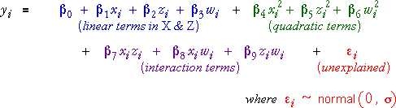

Quadratic model for 3 factors
The quadratic response surface model for two numerical factors extends to three factors with linear and quadratic terms for the three factors and interaction terms between all pairs of factors. (Response surface models rarely model higher-order interactions than 2-factor interactions.)

This model has 10 parameters defining the mean response (plus the unknown standard deviation, σ), so a considerable amount of data is needed to estimate the parameters accurately.
Data from at least 10 design points (distinct combinations of levels of the three parameters) are needed to get any estimates of the parameters. A 23 factorial design only has 8 design points, so it does not allow the quadratic model to be fitted, even if replicates at the centre point of the design are added.
Central composite design
The most commonly used design for fitting a quadratic response surface to three numerical factors is a central composite design. This augments the 8 runs of a 23 factorial design with a further 2 design points (called star points) for each factor in which that factor takes values more extreme than the factorial levels and the other factors are set at their average value. (The design can be explained better graphically — see the diagram below.) There is usually only a single replicate for each at these 14 design points.
If the levels of each factor for the factorial part of the experiment are coded as ±1, the design is rotatable if the extreme values for the star points are ±1.682. In rotatable designs, predictions are equally accurate in all directions round the centre point of the design.
Several replicates are usually added at the centre point of the design to help the estimates of curvature. More importantly, the replicates of the centre point provide a good estimate of the error variance that can be used in analysis of variance for testing the significance of the model terms.
Box-Behnken design
Central composite designs have one run of the experiment at a very high and one run at a very low level for each factor. In some experiments, it may not be feasible to run the experiment at such extreme levels. In this case, the 'extremes' for the star points may be reduced to values closer to ±1 than ±1.682.
However an alternative design only uses 3 different levels for each factor. A Box-Behnken design for three factors consists of three sets of design points; each is conducted with one factor at its centre level and is a 22 factorial design for the other two factors. Again, several replicates of the centre point of the design are usually added. Box-Behnken designs are also rotatable (or almost rotatable).
Wastewater treatment in a refinery
Scientists studied treatments to remove waste products from the water that was output from a dewatering process of petroleum storage tanks. A Disolved Air Flotation procedure was used and three factors were varied in the experiment — the amounts of coagulant, flocculant and pH.
The low and high levels of these factors for a 23 factorial experiment are shown in the following table.
| Factor | Units | Low level (-1) | High level (+1) |
|---|---|---|---|
| Coagulant, Aluminium sulphate | mg/litre | 22 | 88 |
| Flocculant, Polyelectolyte | mg/litre | 6 | 24 |
| pH | 5.5 | 8.5 |
The diagram below initially shows the eight design points for a factorial experiment with these levels.
The 23 factorial design does not allow a quadratic response surface to be fitted.
Select Central composite from the pop-up menu. This adds star points at ±1.682 to the factorial design. Rotate the display (dragging with the mouse or using the rotation buttons) to understand better the location of the star points. Observe that each star point involves one factor at a level more extreme than the values in the table above.
A central composite design is usually augmented by several replicates of the centre point of the design. Use the control on the right to add six replicate of the centre point.
Finally select Box-Behnken from the pop-up menu. The design points are in the centres of each edge of a cube (possibly with additional replicates of the design's centre point). This design only uses three different levels for each factor.